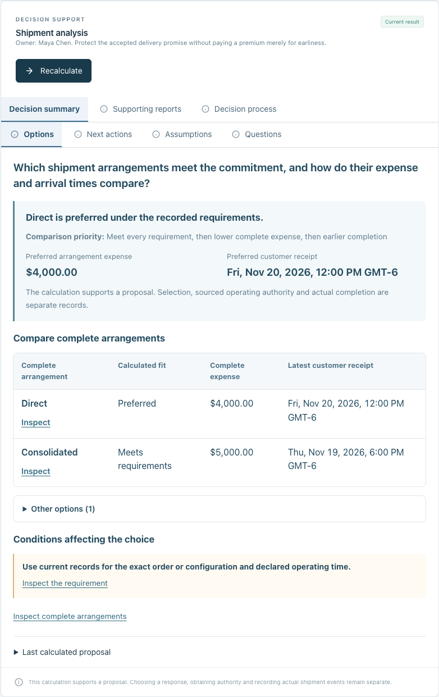
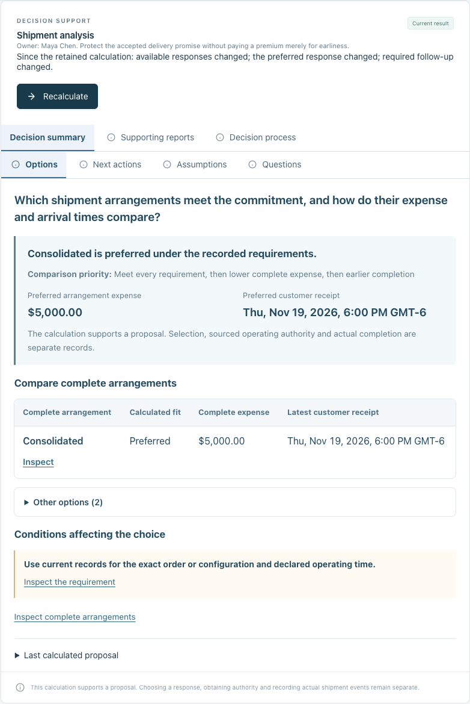

Maya owns the shipment recommendation for a fictional supplier launch. The customer needs all 100 units by Friday at 5 p.m. Finance expects her to avoid unnecessary expense. Launch needs a proposal that protects the delivery promise. The carrier coordinator needs time to obtain authorization and make a reservation.
The team has agreed a practical policy: choose the lowest complete expense among arrangements that meet every recorded requirement; use arrival to break ties. Direct costs $4,000. Consolidated costs $5,000. Maya needs to know whether the cheaper response is still supported before she asks anyone to spend the premium.
Maya, her team, quotes and records are fictional teaching inputs. The comparison uses one pinned cost-first operating app and the same shipment records. Sources and scope identify the exact operating example and its limits.

What must Maya’s shipment proposal establish?
A cheap quote is only part of a response. A complete arrangement connects a freight option with its preparation, people, resources, dates, readiness records and permissions. Maya needs those parts to fit together so that the whole shipment can meet its recorded obligations.
| What Maya must work within | Recorded basis |
|---|---|
| Delivery commitment | All 100 units within the Thursday-noon to Friday-5 p.m. receiving window |
| Expense limit and priority | $5,000; lowest complete expense first, arrival breaks ties |
| Direct | $4,000; Friday noon arrival; reservations accepted until 11 a.m. |
| Consolidated | $5,000; Thursday 6 p.m. arrival; reservations accepted until noon |
| Backup | $6,000; exceeds the recorded expense limit in both contexts |
The same quotes, resources, confirmations and permissions are supplied in both cases. The review compares complete candidate arrangements, rather than treating a route, a price or an earlier arrival as sufficient on its own.
At 8 a.m., save $1,000. At 11:30, protect the remaining option.
Shared basis. ORD-104; 100 units; Thursday noon–Friday 5 p.m. receiving window; $5,000 expense limit. Same quotes, resources, current confirmations and cost-first app.
What changes. Assessment as of: 8 a.m. → 11:30 a.m. This one control updates current time and the earliest selection time together. All times are November 17, 2026, UTC−06:00.
A · The cheaper option is still bookable
Propose Direct · $4,000 · Friday noon
- Assessment time
- 8 a.m.
- Carrier booking windows
- Direct until 11 a.m.; Consolidated until noon


Maya can meet the promise for less. She seeks the required authorization and reservation while Direct remains available.
B · Direct’s booking window has closed
Propose Consolidated · $5,000 · Thursday 6 p.m.
- Assessment time
- 11:30 a.m.
- Carrier booking windows
- The same 11 a.m. and noon cutoffs


Maya can justify the $1,000 premium because Direct is no longer bookable for this unreserved shipment. Consolidated’s other requirements still pass.
What this means for the decision. One policy produces different supported proposals as the available responses change. Earlier arrival alone does not justify the premium; the closed booking window does.
At 8 a.m., Maya can propose Direct. It meets the recorded requirements for less, and its booking window remains open. Consolidated’s earlier arrival does not by itself justify another $1,000 under the agreed policy.
If the same shipment is still unbooked at 11:30, Maya can propose Consolidated. Direct’s 11 a.m. cutoff has passed. Consolidated remains supported until noon. The changed context supplies a reason for the premium: the cheaper arrangement can no longer be selected in time.
These are alternative assessment contexts, not an instruction to delay the cheaper booking. A reservation already made is a separate operating fact; passing its original cutoff does not cancel that reservation.
What does this answer establish?
The assessment first checks which complete supplied arrangements satisfy the mandatory conditions. It then applies the cost-first priority among those that pass. Preferred means the highest-ranked passing arrangement under that policy. It does not mean the cheapest quote in isolation or an arrangement the business has already authorized.
A priority selects among arrangements that meet the requirements; a mandatory condition determines whether an arrangement is eligible at all. At 11:30, changing the ranking cannot reopen Direct’s booking window. If Consolidated’s confirmation or another mandatory condition also fails, Maya needs current supporting records, another modeled response or an escalation of the delivery promise. A preference cannot repair a failed requirement.
The conclusion covers the supplied candidates and declared conditions. It does not establish that every conceivable freight alternative was considered, that retailer onboarding is complete, or that the recorded information is authentic. Maya still needs the right records and people for the actual shipment.
The reusable assessment behind the comparison.
This is a commitment assessment: which complete arrangement can meet this delivery commitment under the recorded conditions, and which passing arrangement does the agreed priority prefer? Each candidate represents a selectable operating plan. The comparison supports a proposal; separate records establish authority, reservation and completed delivery.
Hermod Labs configured the app to check the shipment requirements and preference, and authored the workflow that connects that assessment with the wider operating work. The decision pattern is a bounded shipment commitment; the assessment supplies supporting reasoning. From Arrangements to Assessments explains why a reusable pattern must specify both what its candidates represent and what its answer establishes. The Arrangement Problem describes the connected combinations that the assessment examines.
The summary helps Maya separate three questions: which complete arrangements fit, which one the agreed policy prefers, and what people still need to do. Read the decision-view guide to compare that structure with gifting and work backward from the judgment your own team needs.
Turn a supported proposal into an operating response.
Maya can now bring launch, finance and operations a reason they can inspect. The response still needs owners, authority and execution before the relevant window closes.
- Maya and operationsCheck the supporting facts.Confirm the current quotes, dates, readiness records and permissions for the actual shipment.
- Maya, launch and financeInspect the supported proposal.Use the complete-arrangement comparison to explain the cost and the changed booking condition.
- Responsible ownersAuthorize, reserve and deliver.Approve the action, obtain the carrier reservation and follow through on the original delivery commitment.
View the wider shipment process
The assessment sits within a business process that also gathers records, resolves blockers, obtains approvals and executes the shipment. The chart distinguishes the planning review from those surrounding responsibilities.

On a small screen, scroll sideways to follow the process.
Maya can justify the premium when the context requires it.
In the early context, Maya proposes Direct at $4,000 while it remains bookable. She can meet the recorded promise without the premium. In the alternative 11:30 context, she proposes Consolidated at $5,000 because the cheaper booking opportunity has closed, with only thirty minutes remaining before Consolidated’s cutoff.
The review resolves the disagreement about what the recorded requirements and policy support. Maya can identify the condition that changed, show the complete comparison and give the responsible owners a proposal to act on. They still need to verify the operating records, authorize the expense, reserve freight and establish actual delivery.
Continue with the CLI: identify which changed orders need attention, then follow Maya in the SDK desk as a genuine current confirmation makes a blocked shipment supportable. Those integrations repeat and continue the assessment while retaining the difference between a calculated finding and an operating event.
For a separate current example of uncertainty before booking, calculate whether timely registration verification improves the shipment choice. That walkthrough connects evidence, complete plans and verification under its own supplied facts.